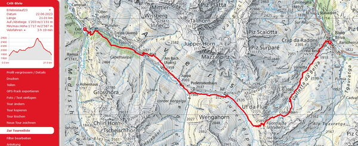
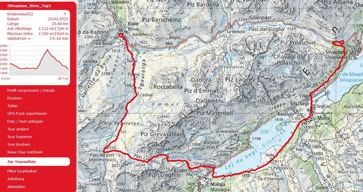
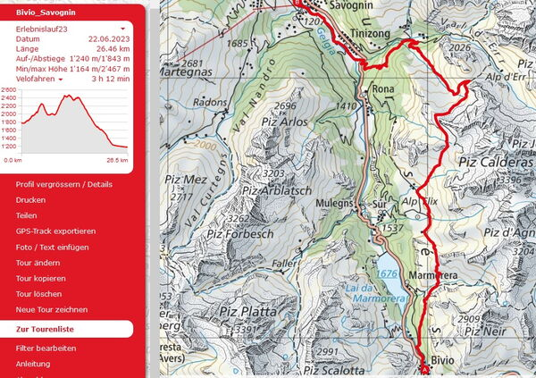
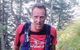
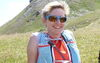
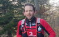
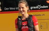
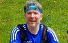

Erlebnislauf 3 Tage
Vom 25. bis 27. August laufen wir in 3 Tagen auf herrlichen Trails
In der Region Bivio - Oberengadin
Wir laufen in 3 Gruppen nach Stärkeklassen. Trailrunning im Wohlfühlbereich. Das Tempo passen wir dem Gelände an und geniessen dabei die schöne Landschaft. Wir haben auch Zeit um Pausen einzulegen. Ist das Gelände eben oder sogar abfallend so sind wir im Laufschritt unterwegs. Steilere Aufwärtspassagen werden auch in zügigem Wanderschritt bewältigt.
Wir logieren im Hotel Post Bivio und geniessen die Vorzüge dieser Hotelunterkunft mit grosszügigen Räumlichkeiten und feiner regionalen Küche. Am Abend geniessen wir ein 3-Gang Menu und am Morgen ein ausgewogenes Frühstück.
Avers Cröt - Bivio

Freitag, 25. August
Avers Cröt - Juff - Vuorcla la Valletta - Lag Columban - Val Beiva - Bivio
21 Km +1200 /- 1150 hm Daten.gpx / zur Strecke auf SchweizMobil
Wir treffen uns um 9.00 Uhr beim Bahnhof Thusis. Das Gepäck wird verladen und nach Bivio geführt. Nach der Begrüssung steigen wir um 9.35 Uhr in das Postauto das uns über Andeer nach Avers Cröt führt. Nach Ankunft um 10.30 Uhr werden wir in 3 Gruppen nach Stärkeklassen loslaufen auf Wanderwegen in Richtung Avers Juff, das höchstgelegene ganzjährig bewohnte Dorf Europas. Weiter folgen wir dem Jufer Rhein und biegen links hoch über die Fourcla da la Valletta. Am Lag Colomban vorbei un des folgt der Abstieg über Valletta und Val Beiva nach Bivio. Im Hotel Post erhalten wir unser Gepäck und können die Zimmer beziehen. Ein feines 3-gängiges Nachtessen erwartet uns. Danach informieren wir euch über den Ablauf und Strecke des folgenden Tages.

Silvaplana - Bivio

Samstag, 26. August
Silvaplana - Sils - Maloja - Lägh dal Lunghin - Lunghin Pass - Septimer Pass - Bivio
25.6 Km + 1100 / -1300 hm Daten.gpx / zur Strecke auf SchweizMobil
Ein sportlergerechtes Frühstück erwartet uns im Hotel Post. Um 9.12 Uhr fährt uns das Postauto über den Julierpass nach Silvaplana. um 9.30 Uhr laufen wir los über dem Silvaplanersee in Richtung Sils Maria. Wegen Wegsperrung bei der Via Engiadina nehmen wir den Seeweg auf der linken Seeseite bis Maloja, dann hoch zum Lägh dal Lunghin und weiter bis zum Lunghin Pass. (Als Zusatz könnte spontan noch der Gipfel Piz Lunghin als Abstecher erklommen werden) Nach kurzem Abstieg erreichen wir den Septimerpass die Wasserscheine Rhein-Po. der Übergang Sursees- Bergell. Der Abstieg nach Bivio erfolgt über schöne Alpweiden und herrlichen Trails.
Bivio - Savognin

Sonntag, 27. August
Bivio - Alp Natons - Alp Flix- Piz Colm - Pensa - Tinizong - Savognin
26.4 Km +1250 hm / -1800 hm Daten.gpx / zur Strecke auf SchweizMobil
Nach dem Frühstück geben wir unser Gepäck zum Transport nach Savognin auf. Wir starten zur dritten Tour direkt beim Hotel und nehmen den Weg zur Alp Natons in Angriff. Über den Kanonensattel erreichen wir Alp Flix dann steigen wir hoch zur Alp Negna. Der Abstieg nach Savognin führt uns an Pensa, Plaz Bleischen vorbei nach Tinizong und der Julia (Gelgia) entlang nach Savognin dem Ziel des Erlebnislaufes. Beim Badesee Lai Barnang werden wir als Abschluss gemeinsam ein z'Vieri geniessen. Um 16.25 Uhr führt uns das Postauto zurück nach Thusis dem Ausgangspunkt den wir um 16.58 Uhr erreichen werden.
Leistungen
Folgende Leistungen sind im Teilnehmerbeitrag inbegriffen ab Freitag von Thusis bis Sonntag in Savognin
- Teilnahme bei Trailrunning in Gruppen mit ortskundigen Laufleitern nach Stärkeklassen ohne Zeitmessung.
- Übernachtungen mit Frühstück und Nachtessen Hotel Post Bivio
- sämtliche Postautofahrten zu den Ausgangspunkten (Gutschrift bei GA/ Halbtax)
- Abschluss z'Vieri am Sonntag
- Erinnerungsgeschenk
Treffpunkt am Freitag, 25. August 09.00 Uhr beim Bahnhof Thusis, (Parkmöglichkeit bei Marktwiese, nähne Bahnhof). Am Sonntag, 27. August endet der Erlebnislauf ca. 16.00 Uhr nach einem Abschluss z'Vieri in Savognin.
Laufleiter
Die Laufleiter werden die Strecken vorgängig ablaufen und kennen die Trails - Pro Gruppe sind jeweils zwei Leiter dabei
Laufleiter begleiten euch
-

-
-
-

-

-

-

Laufleiter Erlebnislauf
- Marco Jäger, Chur
- Petra Jäger, Chur
- Joschi Furrer, Zug
- Brigitte Eggerling, Chur
- Michi Gisler, Bonaduz
- Iris Capatt, Chur
- Martin Lädi Ledermann, Chur
angemeldete Teilnehmer
- Sebastian Reich
- Barbara Miller
- Irene Breitmaier
- Maria Conrad
- Röbi Conrad
- Micheline Pang
- Nartano Kottmann
- Jean-Marie Zogg
- Michel Calonder
- Katharina Habermacher
- Peter Altmann
- Bea Altmann
- Martin Lüönd
- Daniel Ulrich
- Barbara Rutz
- Ruedi Wirz
- Arnold Grischott
- Albert Thöni
- Helene Arquint (nur Freitag)